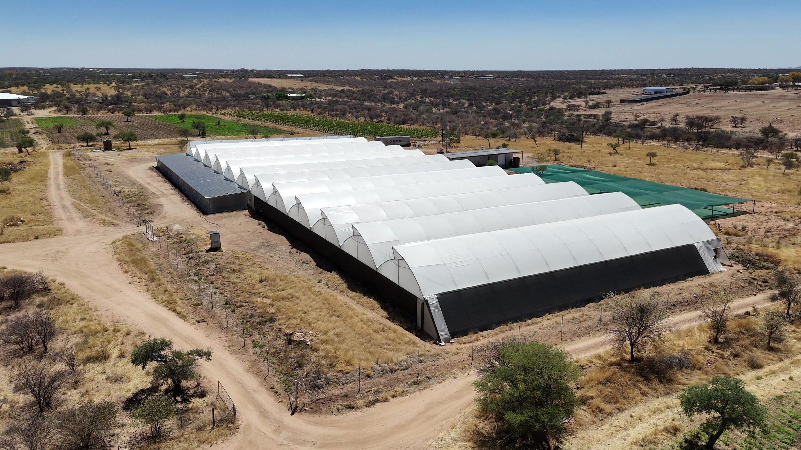
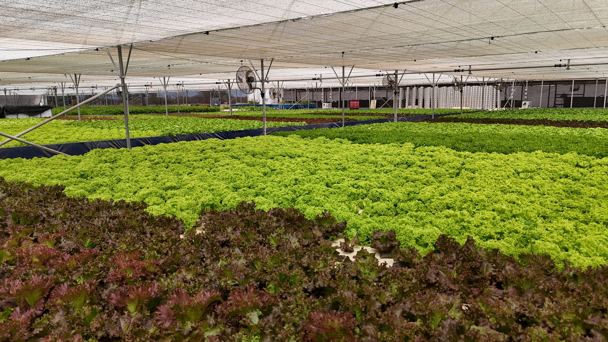
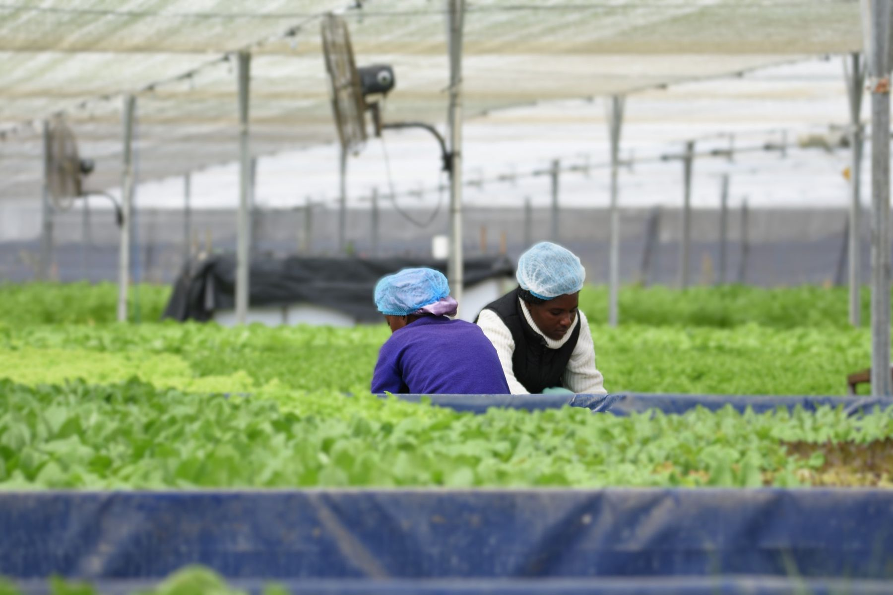

A team that has already built it.
Oribi is a collective of investors and operators. Our first asset, in Okahandja, operates at scale. We are developing further projects across Southern Africa and are speaking with investors, development finance institutions and operating partners who see the same gap.
What exists today.
m² under cover, one site
independent growing systems
jobs, 22 permanent
certifications: Local GAP and Namibian Agronomic Board registration
The farm began supplying Namibian retailers in late 2023 and doubled its growing area in 2026. Figures describe capacity and structure, not sales. See the farm in detail.
Import substitution.
Namibia buys in much of its fresh and processed food. Producing and processing it locally shortens the chain, cuts transport and lowers the cost that reaches the shelf.
We estimate fancy lettuce in Namibia now costs 30 to 50% less than before we entered the market in late 2023, and quality rose as the price fell. That is the evidence for the model.
- ThesisReplace imports with local production and processing
- First assetOribi Aquaponics, Okahandja
- MethodAquaponics and net-house growing
- PipelineFurther projects in development
Investors back execution. Oribi has built the first asset, runs it on data, and is structuring the next.


A proving ground for Southern Africa.
A real import gap
Fresh produce reaches Namibian shelves by road, often from more than a thousand kilometres away. A local producer at retail scale and standard changes the price and the freshness.
Policy pulls the same way
The Namibian Agronomic Board's Market Share Promotion scheme requires traders to buy a minimum share of fresh produce locally. [Current rate to be confirmed before launch.]
A playbook that travels
What we learned in the dry Okahandja climate (water, nutrients, data, food safety, packing) applies wherever imports are expensive to move and quick to spoil.
Looking at South Africa? Let us compare notes.
Namibia and South Africa trade closely, and many Namibian shelves are still stocked from across the border. Our energy partner already finances and operates commercial solar systems in Namibia, South Africa and Botswana.
We have no South African project to announce. We are developing further projects, and we want to hear from investors and operators who are looking at South Africa or elsewhere in the region, particularly where the model of local production and processing replacing imports can be repeated.
Regional institutions have put agricultural investment on the SADC agenda. In October 2025 the SADC Secretariat and the FAO presented a joint investment proposal of about US$2.1 billion for irrigation, mechanisation, agro-processing and trade integration. These are third-party reports, linked below.
Enquire
Tell us who you are and what you are looking at.
Introduce
A short call with the Oribi team.
Visit
See the farm, by appointment.
Review
Investor information is shared on request, subject to documentation.
Request the investor briefing.
This is an enquiry, not an application. A member of the Oribi team replies personally, usually with a short introductory call and, where it fits, a farm visit. Investor information is shared on request and subject to documentation.
- HortiDaily · Nov 2025Namibian aquaponics group geared for regional expansion↗
- The Brief · May 2026Namibian investors back N$2.2bn hydroponics project to cut food imports↗
- SADC · Oct 2025SADC Secretariat and FAO pitch to mobilise US$ 2.1 billion for Regional Investments Projects to transform Agri-food Systems in Southern Africa↗
External links are third-party reports. Oribi is not responsible for their content.